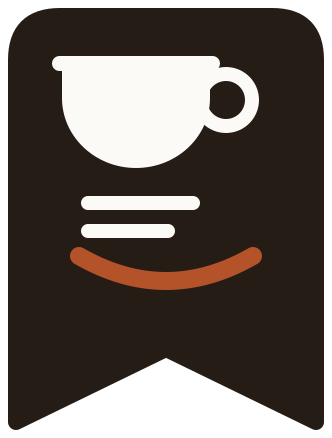

Note My Coffee
Turn extraction into science
📍 …
Ideal extraction conditions today
60%
RECIPE COMPLETENESS
Add bean name to complete
18.0
g
IDEAL
92.0
°C
IDEAL
28.5
sec
IDEAL
Press START to begin extraction
36.0
g
IDEAL
BREW RATIO
1 : 2.0
✓ SCA recommended
Unsaved recipes are lost forever